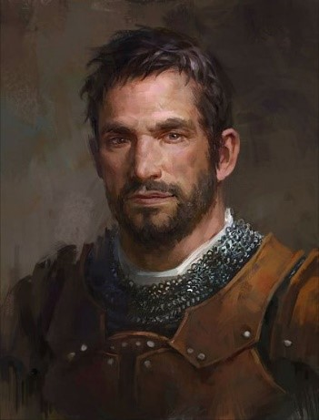
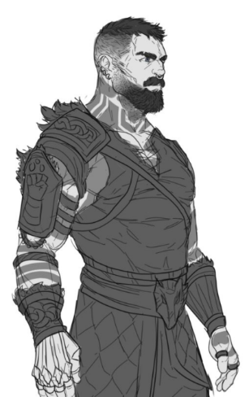

The Lion Ti cult worship "the old ways," choosing to focus on nature instead of the gods. They
believe that magic of nature origins is the only "true" magic, and any other systems are shunned as
being impure. They share their druidic knowledge with no one. Outsiders are considered corrupt and
wicked.
The World Root
The World Root is believed to be a tree of unimaginable size, hidden somewhere in the world.
The tree watches and knows all.
The tree in the middle of their compound is part of it, which they worship as part of the world
root.
Members practice quite mediation and study. They value stoicism and endurance. Most of their prayer
consists on sitting quietly in nature and meditating.
School
Children are trained from the age of five in the ways of nature.
Every year they "move up" learning:
Spells (mostly cantrips.)
Wild Shape
Gardening
Forestry
Worship
Graduate at age 23
Given masks upon graduation
A small group of teachers separate the students by rough age range
Masks
After the graduation ceremony, graduates are given masks that represent them. As of the moment they
put
them on, they can only take off their masks when they are alone or in familiar groups (such as
parents,
siblings, etc.) Healers are not given masks, on account of they do not go through the graduation
ceremony. This is seen as a sign of shame.
The Graduation Ceremony
The Wild Hunt
Trespassers who have stumbled upon the cult throughout the year, are imprisoned and then let go
during the ceremony.
The graduates take an extreme strain of smokeweed,and are forced into wild shape.
They hunt down the trespassers to prove that they can protect their family (the cult.)
If there have not been enough trespassers in the area, some of the most trusted members will be
sent out to
find some.
The mountains in that area are known to be dangerous/ haunted by the “normal” folk living there
because people
will go disappearing.
The Council
Lion Ti is ruled by a group of six elders, holding five seats on the Council. The council members use
smokeweed for vision quests, and then use what they see on these quests to shape the future of the
cult. Although the council votes on all choices, the eldest Elder has the most influence.
Inside the Elder's Hut
The hut is more of a druidic manor house. A giant tree stands in the middle of the room, growing out
of the roof. The roots create five levels of grassy plateaus where each throne is set. The walls are
lined by hieroglyphics that flow softly in the dark light. In the center of the room is a fire that
never dies, around which the Elders sit during their vision quests. The roof and walls are all made
of vines, thorns, and ivy twisting through the brick.
Death
The cult celebrates upon death. Funerals are the equivalent of a birthday party, meant to celebrate
the dead member's moving on to the next stage of life. Death is not the end for Lion Ti, and instead
is a simple part of the life cycle. Members are rewarded in death by sharing their energy with the
earth and becoming part of nature.
Upon Death:
The dead are burned to ash and returned to the earth.
Funeral Eulogy:
"You need to be very still
To hear the concert of your body.
To think about what you contain.
Salt and water
Know what it's doing
Renewing itself
Back to earth
It is a quiet thing
This is where our riches are
Brimming with love
All fluid and quiet and fire."
Traitors/criminals/dishonored people who died are buried ina steel box so that they can't be returned
to nature.
Commune
Rules
Members are only allowed to worship the old ways or nature.
No one is allowed in or out of the commune.
The most trusted are allowed to leave on short trips that benefit the community, with
permission from the council.
No one is allowed to share their druidic knowledge or secrets with the outside world, or have
any sort of relationship with someone outside of the commune.
The only celebrations are about nature or focused on the cult, such as deaths, graduation,
etc.
Food
No alcohol
No drugs, except for Smokeweed
Only natural food
Plague
The plague hits the cult every year. They do not want any medicine unless it is from nature. They do
not allow any outsiders or plague doctors. Because of their beliefs surrounding death, they are
accepting of death by plague, thinking of it as nature telling them it's their time.
Orphaned children who survived households hit by plagues were once sent to Effie's father to train,
until he became an elder. They are thought to be powerful blessings, saved from the plague to help
the community.
Places
Snowy, mountainous forests.
Family units live in 1 longhouse each.
No walls or doors inside.
Thatched roofs and clay to keep the heat in.
Open fire in the center of the room.
Bunk beds along the walls.
One area to eat as a community where food is served 3 times a day.
One bath house for the entire community.
Characters
Council Members
Six Elders, Five Seats
High Elder
Aenwyn Naemoir
Creator of the cult.
Last of the wood elves.
6,969 year old female elf druid.
Real bitch.
Effie does not like her.
She's a very strict ruler.
Seen as the "main" elder and makes most of the decisions for the cult.
The Scholar
Daeran Boneheart
Second in Command
Weak willed, more of a yes woman for the High Elder.
Human
Has a strong love for th rules and will abide by them rigidly, no matter what. She knows
that their people are the only "true" servants of nature.
She wants the cult to keep to themselves and remain hidden, so that they can grow and
develop in peace.
The Twins
Briar and Rose Shadowstar
Briar
Male
Stronger Spell Caster
Rose
Female
Stronger Wild Shape
Humans
They're both slightly unhinged.
Work as 1 single ender, sharing ideas and responsibilities.
They're sadistic nd focus more on the worship side of the cult. They believe whole
heartedly that
the tree watches them all, and have devout their lives to it. They are see as the
protector of the
tree, and put nature above the lives of even their own people.
Love watching the graduation hunt.
Are in charge of punishments in the community.
The Warrior
Mog Tamesun
Orc
Similar to Daeran, has a strong love for the rules and will abide by them rigidly, no
matter what.
He knows that their people are the only “true” servants of nature.
Unlike Daeran, he believes their ideology should be spread. He wants to bring in more
people and
conquer the villages around him.
Effie's Family
Garret Windhair
Father
Father of Effie, Eldon, and Emry.
Takes in children who were born outside of the cult or orphaned.
Is the kindest of the Elders and is growing tired the others. He doesn’t believe
what they do is right, but tries to hold his own believing he can change things for
the best for his family.
He raises the children in order to give them a proper childhood.
Held in high regard in the community, so the High Elder cannot remove him.
His focus is on teaching the youngest children of the community, encouraging them to
think for themselves and worship nature with love instead of hatred.

Emry Windhair
Sister
Effie and Eldon's Sister
Is a healer, thought to have wasted her talents.
Does not have a mask and technically did not graduate.
She wanted to become a healer in order to help save others from the plague, after
losing
her parents to the plague at the age of thirteen.
She’s seen as an outsider in the community, and still lives with her father.
She’s one of the kindest people in the cult.
Because of her outsider status, she is not privy to many of the cult secrets that
other
adults are.
Eldon Windhair
Brother
Brother of Effie and Emry.
A warrior and guard, he does his best to protect the others from outsiders.
He’s also quite soft hearted and does not buy in to a lot of the harmful cult
ideologies.
Similar to his sisters, he’s seen to have wasted his druid potential, although he is
regarded more highly than both Emry and Effie.

Others
Adelaide Thorngage
Mentor
Taught Effie as she grew older.
Has endless patience, but Effie could never vibe with the whole sit still and
commune
with nature thing.
She is the main teacher in the community.
She has a duel nature. She agrees with the cult and their ideologies because she
never
felt safe in the outside world.
On the other hand towards her own people she is a kind woman who enjoys teaching
about
nature.
She has a deep hatred towards outsiders, but a strong belief that if anyone wants to
join or return to the family, they should be welcome with open arms. As long as they
leave every belief behind other than their own.
The Silent Bard
The Silent Bard was the first person Effie met after leaving her cult who was not hostile
towards her. He saved her from bandits, and afterwards taught her thieves tools
proficiency and sneaking.
Effie
Effie was tired of never seeing the outside world. She had trouble meditating and learning,
and when faced with failing before graduation, she decided to leave the cult for a little
adventure. She has yet to realize the consequences of her actions.
She will worship Wirozath:
Ancient Spirit of Growth, The Harvest, Life, The Forest. The Plant King, Ol'Barkhide.